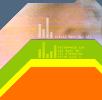
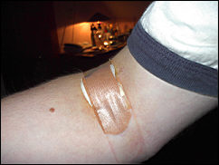
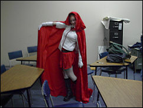

|

oooooh, blogger...
|
....... |
November 1, 2001
 never before have I had so much pride in dispensing bodily fluids. yep. I did it. today, I went to the red cross and donated blood for the first time. it was a pretty decent experience, despite the abundance of bluehaired volunteers in "I love nana" t-shirts asking you the same questions over and over again ("did I give you that form? oh, you signed in, didn't you?? is this your first time here??? oh, by the way, DID YOU GET THE FORM???!") with the droll cadence only senile cape codders know how to speak with. and the orange juice. oh, the orange juice. let me tell you, blood wasn't the only bodily fluid I dispensed of today. I had to drink EVERYTHING they gave me until I could leave. I thought I was going to burst. but, hey, just doing my part as a good citizen. I was happy to do it, and I'll definitely do it again in a few months.

and here is a picture of danielle dressed up as little red riding hood for halloween. it doesn't have anything to do with anything, really.
................................................................................................................................................... |
..... |